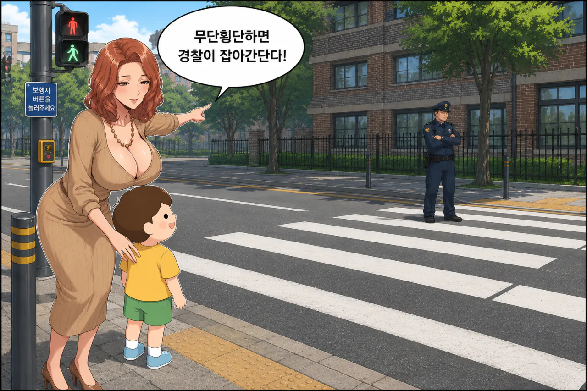
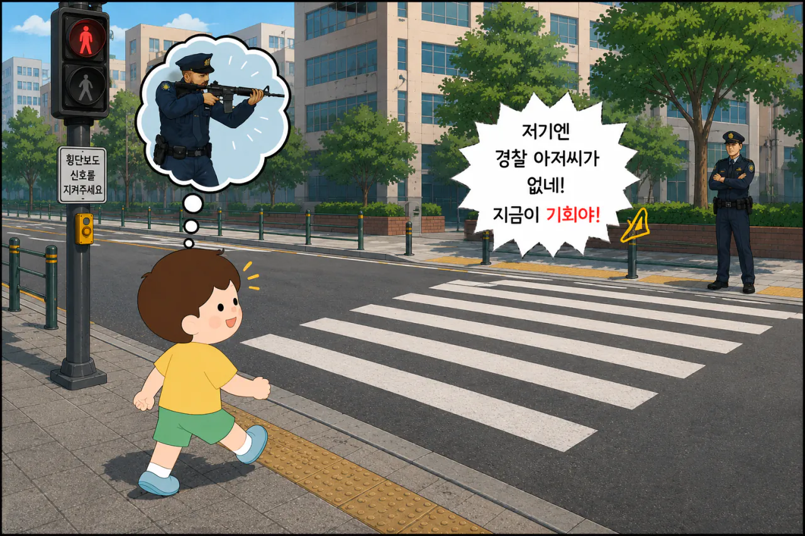
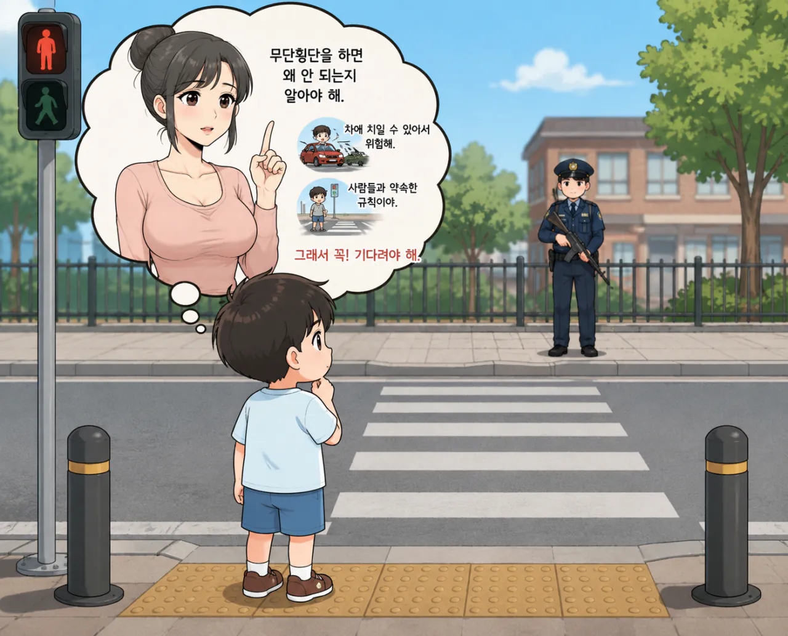

아이에게 빨간불에 무단횡단을 하면 안되는 이유를 경찰이 체포한다고 설명하면

그아이는 경찰이 없으면 그떈 무단횡단을 할수있다
반대로 아이에게 왜 무단횡단을 하면 안되는지를 설명해야

그아이는 그걸 이해하고 무단횡단을 하지 않는다고
2020년 9월 11일 방송된 《금쪽같은 내 새끼》의 4남매 편에서 오은영 박사 ‘규범의 내재화



같은논리로 차가 없는거같으면 바로 무단횡단 해버리기
먼소린진 모르겠지만 가슴보니 참소리하는듯
뭐가 이리 말이 많네.
난 찌찌 보고왔는데 ... ㅡ,.ㅡ